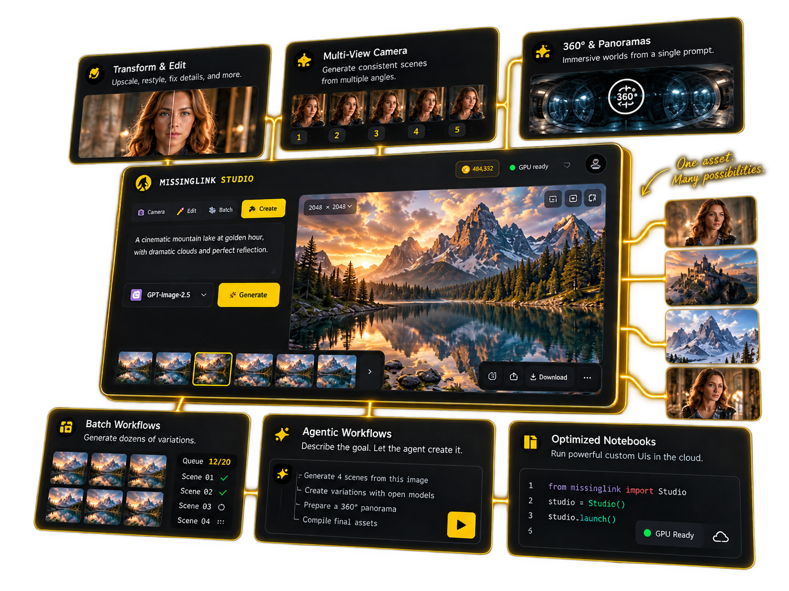
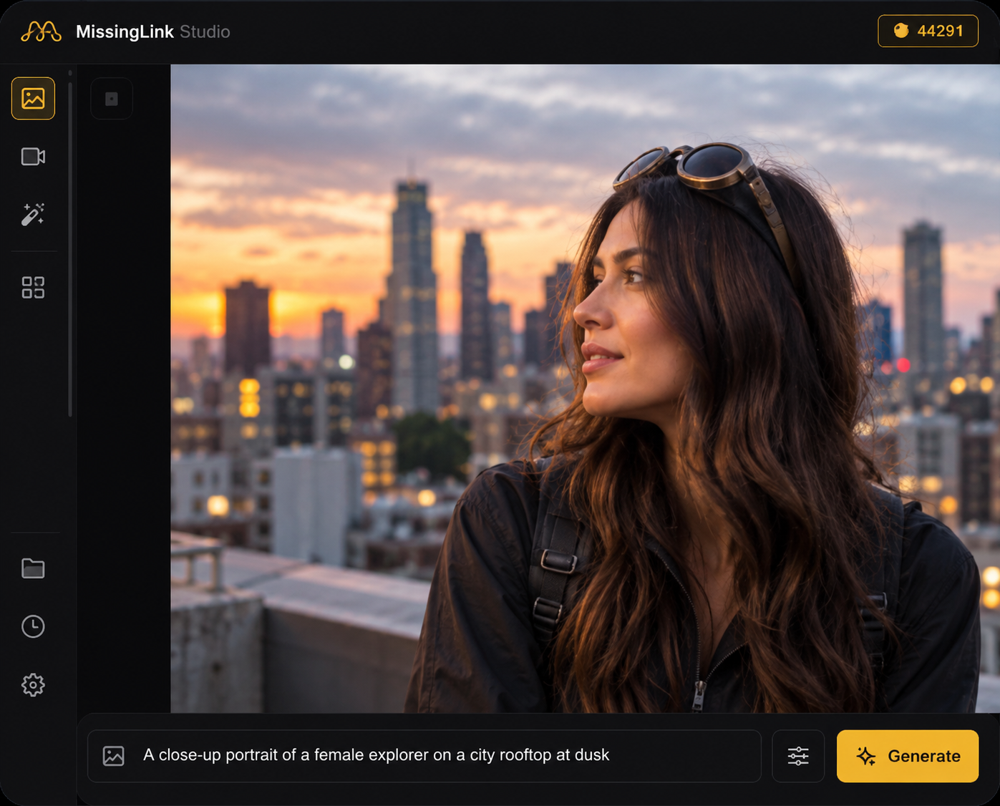
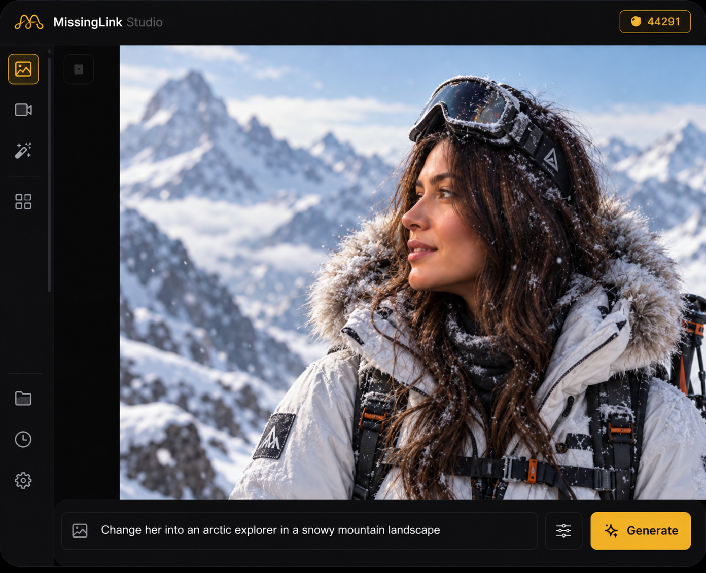
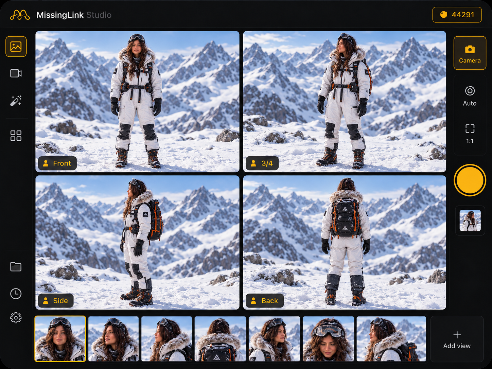
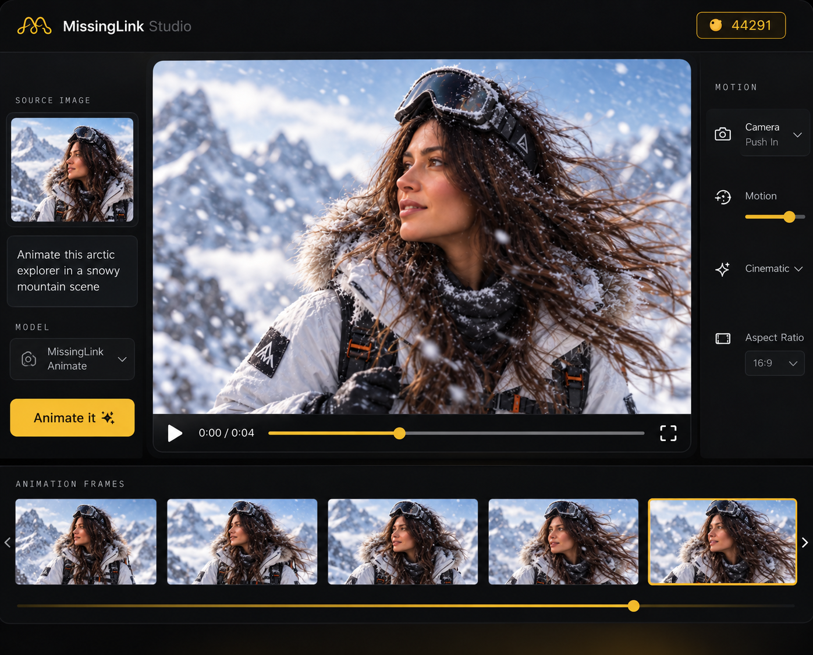
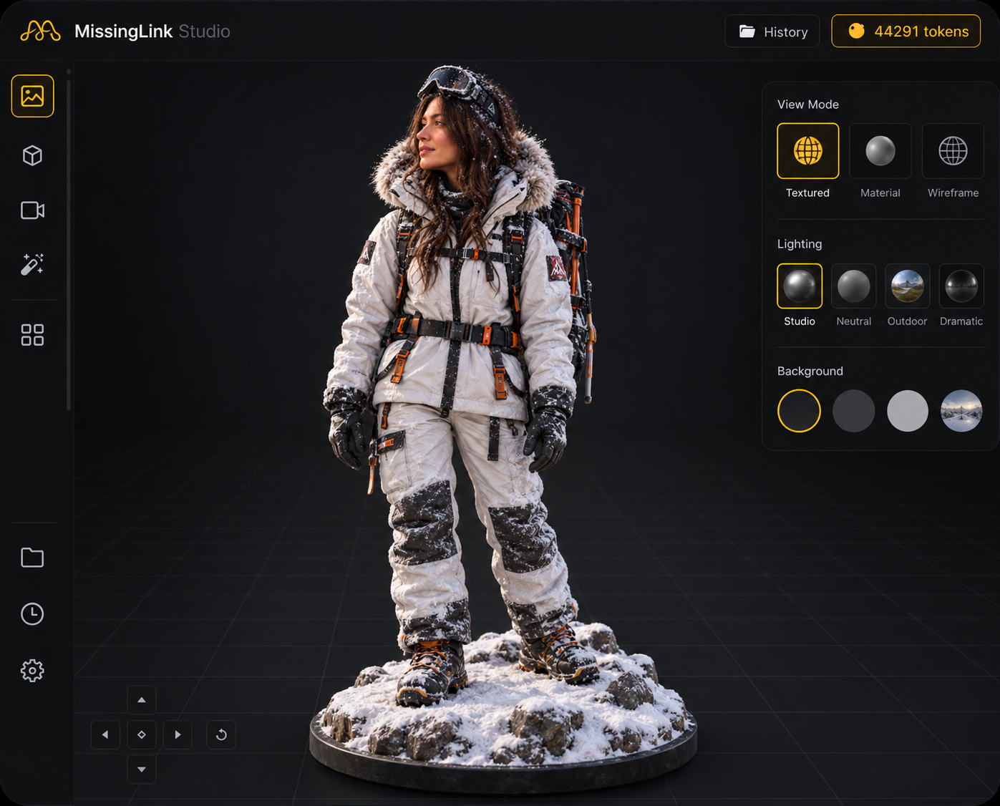

GPT‑Image‑2.5 is live
in MissingLink Studio.
Create the image, then keep building.
Start with OpenAI’s newest image model, then create the next scene, transform with open-source models, reshoot the same subject, batch it, animate it, and move into optimized notebooks — without rebuilding your workflow.

Make one thing you like. Then keep building.
The same subject moves through the workflow. No random demo reel.

Create or upload
Begin with a sentence, a reference, or an image you already have.


Transform it
Change style, setting, or composition with open-source image models.

Move the camera
Generate consistent front, 3/4, side, and back views of the same subject.

Animate it
Use the image you already made as the starting frame for motion.

Make it 3D
Turn the finished reference into a textured model ready for the next project.
The value starts after you get an image you actually like.
Most AI tools stop at generation. MissingLink is built around everything that comes next: keep the subject, change the shot, apply the same direction to a set, create motion, build 3D, or move into an optimized notebook.
Create one thing you like. Keep going from there.
Generate with GPT-Image-2.5 in Studio, then use the rest of MissingLink to turn that idea into the deliverables you actually need.
Open MissingLink Studio →